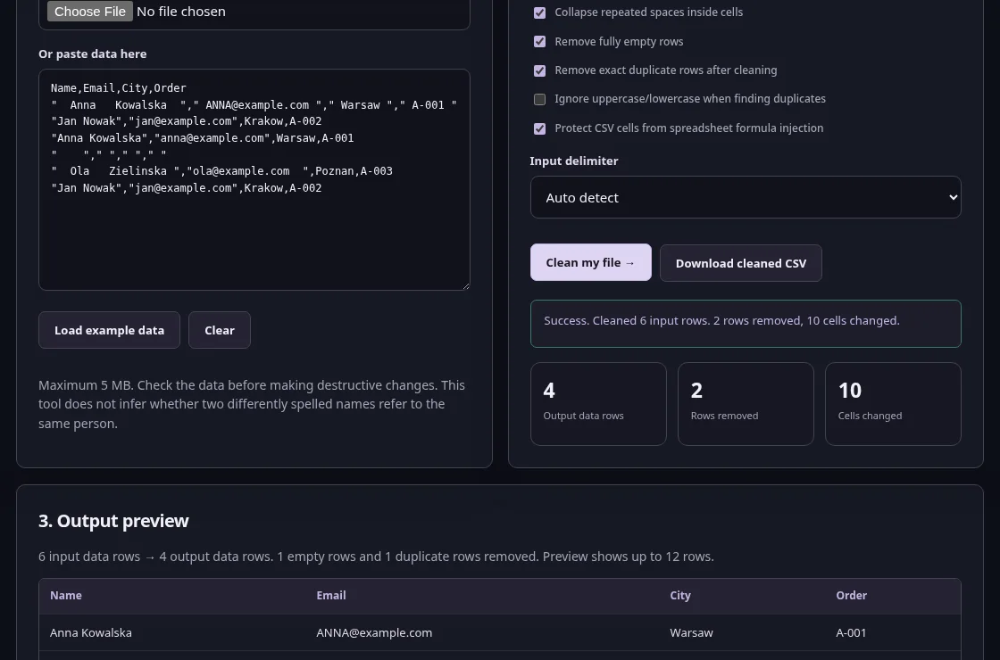
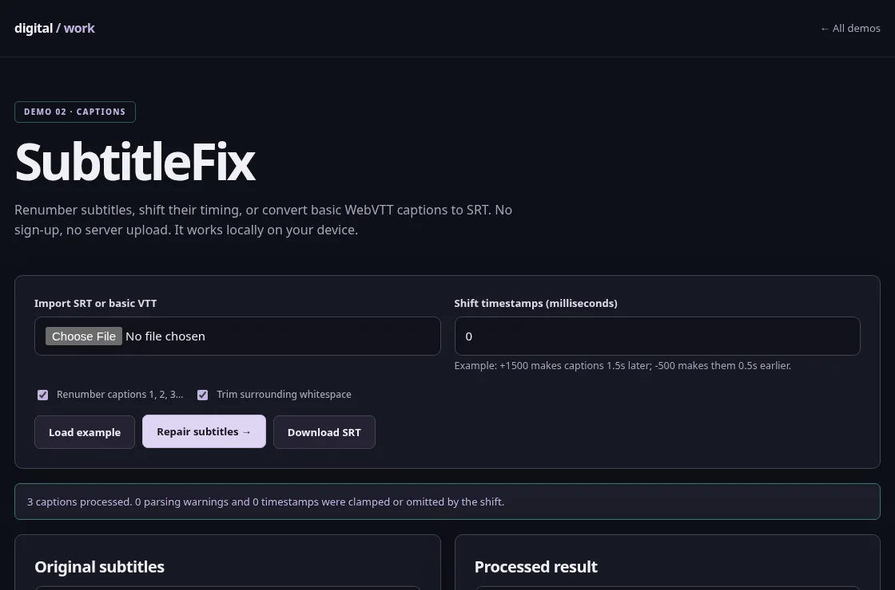
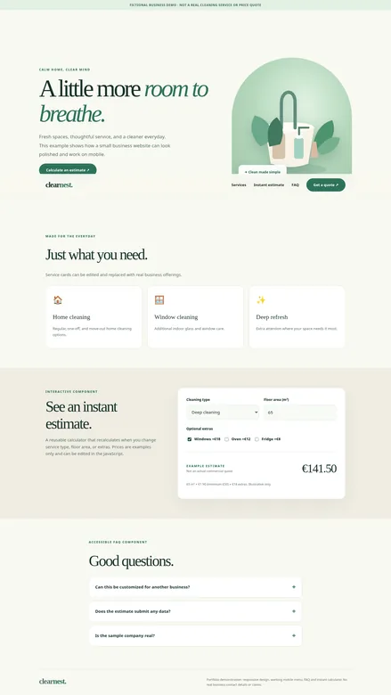

Useful work.
Actually finished.
A practical hand with code, websites, files, design, writing and research. From small one-off fixes to complete digital projects — clear scope, no unnecessary fuss.
Not just promises.
These are original portfolio examples, not paid client projects. The file and subtitle pages show sample before-and-after work; the website example remains interactive.

CSV Cleaner
A before-and-after example of CSV cleanup, duplicate removal and custom formatting.

SubtitleFix
A before-and-after example of correcting subtitle numbering and timing.

Responsive web build
A sample business page with responsive layout, accessible mobile navigation and interactive pricing.
The CSV and subtitle previews use fictional fixed samples and do not process uploads. The responsive website remains an interactive demo of a fictional business and does not process payments.
One place.
Different kinds of work.
A loose set of digital services rather than a rigid agency menu. Pick an area below, or describe your task. Starting prices are examples; exact quotes depend on the files, complexity, and deadline.
Looking for something else?
Small tasks and longer projects are both welcome for review. Send a brief first — not every request will be a fit.
Useful things. Ready to own.
Three original products have been developed: a streaming-scene editor, a seven-piece website component kit, and a local file organizer. First releases are being prepared; no fake sales or client claims.
Simple from the start.
No calls. No awkward sales process. Just the information needed to work out if the task can be done well.
Tell me the problem.
Describe the outcome, share a non-sensitive example, and say what matters most. No long questionnaire required.
Agree before starting.
I'll confirm the scope, estimated price, timeline and what you'll receive. No surprise add-ons or unlimited revisions.
Get usable files.
The deliverable is checked before handoff. Any promised revision is handled within the agreed scope.
What do you
need done?
Not sure what category fits? That's fine. Describe the job in plain language and choose a budget. I'll assess it before agreeing to anything.